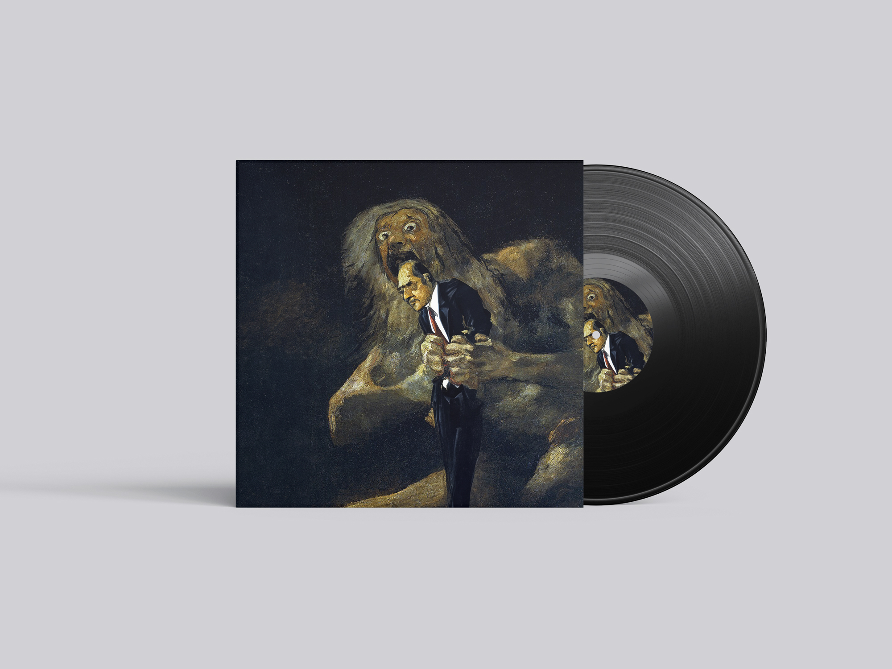
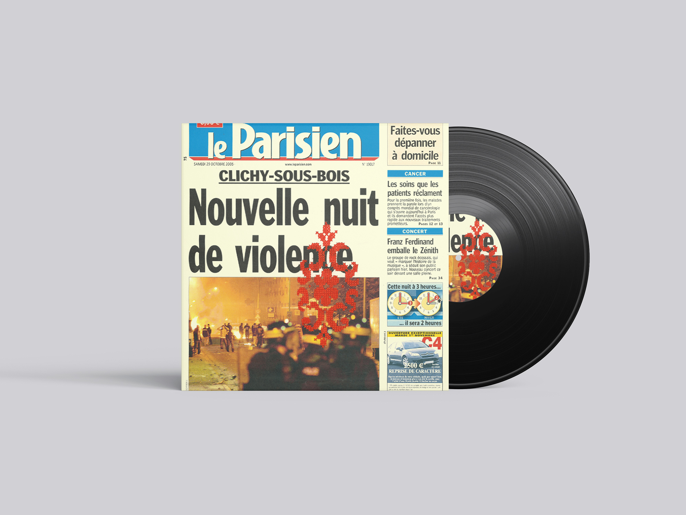
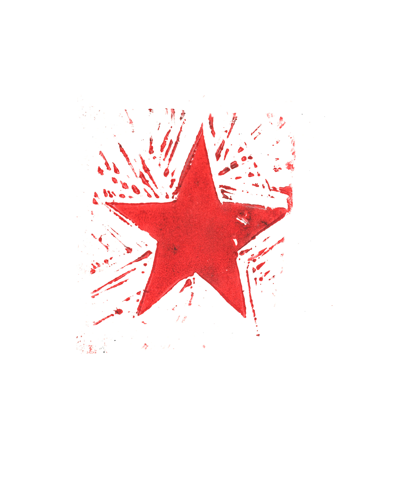
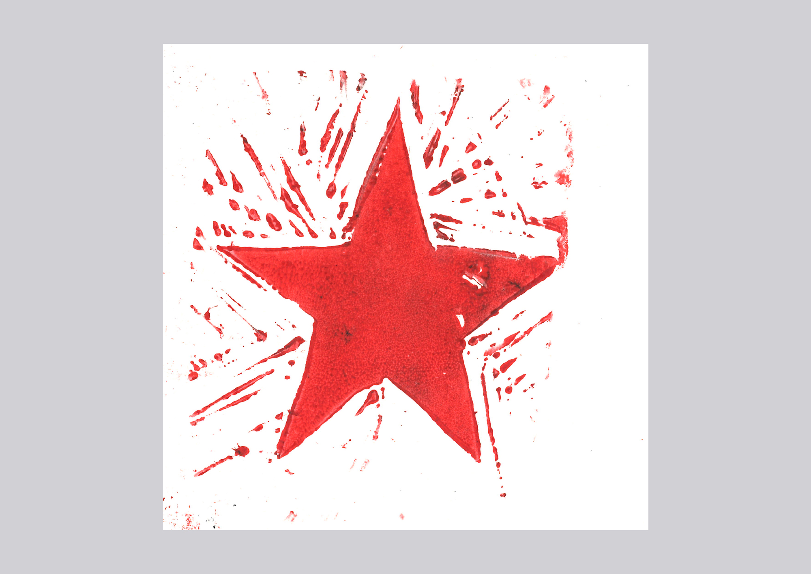
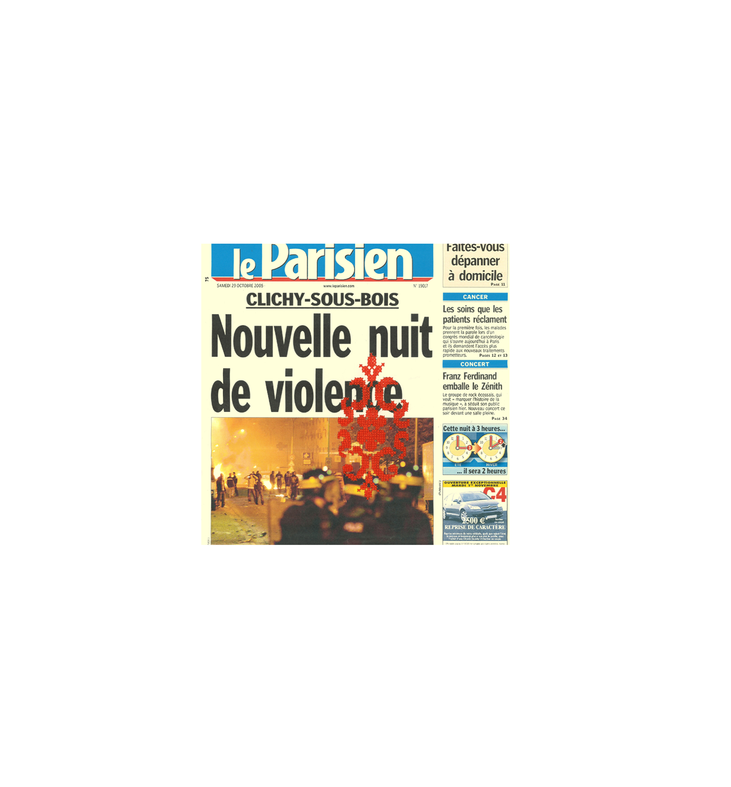

Doux pays
Ce projet a prit comme base la chanson Doux Pays de Candeur Cyclone. Sans prendre en compte la direction artististique deja existante, seulment les paroles et leurs sens sont pris en compte. C'est un ensemble de quatre proposition, deux avec des techniques traditionnel et deux en ia.
Date du projet : Décembre 2024




